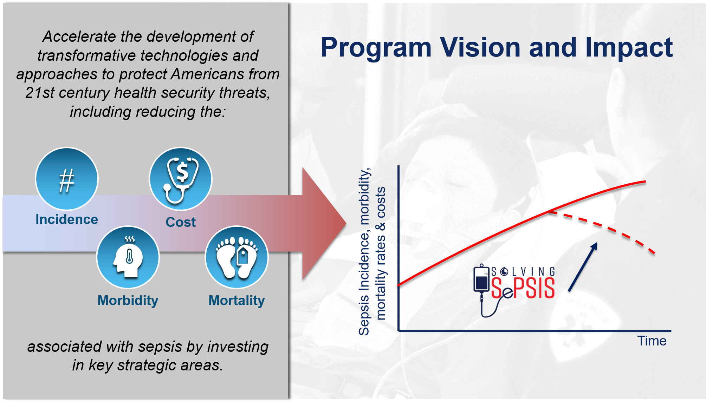

What is Sepsis?
A potentially life-threatening medical
emergency, sepsis is the body’s
extreme response to an infection. All
roads can lead to sepsis. It can arise
from any infection that triggers a chain
reaction throughout the body. To be
prepared against health security
threats, we need to address sepsis
directly. Without timely treatment,
sepsis can rapidly lead to tissue
damage, organ failure, and even
death.
At least 1.7 million adults in the U.S.
develop sepsis each year. That’s more
than the number of people who have
heart attacks and strokes combined.
What is Our Strategy

The Solving Sepsis program is addressing the entire continuum of care of a sepsis patient – from early pre-hospital interactions with healthcare providers, through hospital care and discharge – seeking innovative interventions at each step to identify sepsis early, address clinical management in order to improve patient outcomes and decrease mortality.
What is Solving Sepsis Doing
The Solving Sepsis Program is
committed to a multi-pronged approach
to combat sepsis.
Greater than 80% of patients that develop
sepsis acquire it in the community. For
every hour appropriate treatment is
delayed, the likelihood of death increases.
To ensure everyone gets the right care
at the right time, we are addressing the
entire continuum of care of a sepsis
patient — from early pre-hospital
interactions with healthcare providers,
through hospital care and discharge –
seeking innovative interventions at each
step to reduce sepsis mortality.